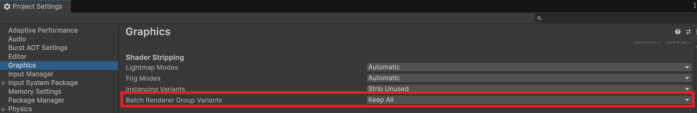

Installation
Import from Asset Store
- Open Window > Package Manager.
- Find BRG Instanced Renderer under My Assets.
- Click Download & Import.
Shader Stripping
After importing, you must ensure Unity does not strip the Batch Renderer Group shader variants that the system relies on:
- Open Edit > Project Settings > Graphics.
- Scroll to the Shader Stripping section.
- Set Batch Renderer Group Variants to Keep All.

Important
If this is left on the default setting, Unity will strip the required shader variants and instances will not render in a player build!
Verify the Config Asset
After import, a config asset is created automatically at Assets/BRG Instanced Renderer/BRGIRConfig.asset. This asset must be registered in your project's Preloaded Assets to work at runtime.
To verify:
- Open Edit > Project Settings > Player.
- Scroll to Preloaded Assets.
- Confirm that BRGIRConfig is listed. If it is not, drag it in from
Assets/BRG Instanced Renderer/.
Important
Only one BRG Instanced Renderer Config asset should exist in Preloaded Assets. Having multiple will cause errors.
Compute Shaders
The system uses two compute shaders (BRG_Culling and BRG_Upload) for GPU culling and data transfer. These are auto-discovered by name and assigned to the config asset — no manual setup is needed.
Next Steps
You're ready to start rendering instances. Choose the workflow that fits your use case:
- Terrain — Register terrain trees and details for GPU-instanced rendering
- GameObjects — Convert a group of placed prefabs into GPU-instanced rendering